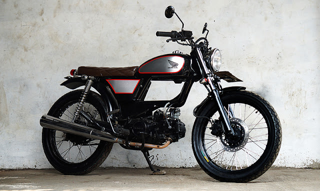

MOPPED
A moped is a combination of a motorbike and a bicycle, so the earliest mopeds were motorbikes which also had bicycle pedals, usually used for emergencies. A rare sight on the roads these days, the design feature fell out of favor in the 70s, and the laws surrounding mopeds were changed in 2013 so older models no longer need to have them. However, electric-powered pushbikes have become a more common sight on the roads these days, and some of them even look a lot like old-school pedaled motorbikes. Even though they can produce the same amount of power, they are not classified as mopeds.
